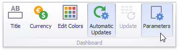

Creating Parameters
This topic explains how to create a new dashboard parameter and specify its settings.
Creating Parameters in the Dashboard Designer
To create dashboard parameters in the Dashboard Designer, do the following:
Click the Parameters button on the Ribbon's Data Source tab.

In the invoked dialog, click the Add button to add a new parameter.

Specify the following settings.
Visible - Specifies whether or not the parameter editor is visible in the Dashboard Parameters dialog.
Allow Null - Specifies whether or a not null value can be passed as a parameter value.
Allow Multiselect - Specifies whether or not multi-selection is enabled for the current parameter. The following limitations are applied to parameters with multi-selection enabled.
- Use the is any of or is none of operators to pass a multi-select parameter to a filter criteria or to the Expression format condition.
- Use the In or Not In operators to pass a multi-select parameter to a calculated field expression.
- Stored procedures used in the SQL data source do not support multi-select parameters.
Name - Specifies the parameter name. When creating and modifying parameter names, follow the rules below.
- A name can contain letters, numbers and underscores.
- A name cannot contain spaces.
- A name cannot be an empty string.
- The dashboard cannot contain parameters with the same name.
- Names are case-sensitive. For example, you can create the names Parameter and PARAMETER .
Description - Specifies the parameter's description. The parameter's description is the value displayed in the Parameter Name column of the Dashboard Parameters dialog.
Look-Up Settings - Specifies the parameter's look-up editor settings.
Select All Values - Specifies whether or not all parameter values should be selected in the initial state of the Dashboard Viewer.
Note that this option is in effect when Allow Multiselect is set to true.
Type - Specifies the parameter type.
Value - Specifies the default parameter’s value. Note that when Allow Multiselect is set to true, the Value option allows you to select multiple parameter values.
Then, click OK to add the created parameters to the dashboard.
Look-Up Editor Settings
There are three types of look-up editor settings that can be specified for a parameter. Select the required type from the LookUpSettings drop-down list.

No Look-Up - set the Value to use a static value as a parameter.

Static List - click the ellipsis button to add static values for the current dashboard parameter.

In this case, the Value specifies the default parameter's value.
Dynamic List - allows you to use a list of values from the existing data source as a parameter. You need to select the required Data Source from the list of available data sources and data members for the dashboard parameter's display name and value, respectively.

- First, select the required Data Source from the list of available data sources. For the SQL data source, select the required Data Member that specifies the query from the selected Data Source.
- Then, specify data members for the dashboard parameter's value and display name using Value Member and Display Member, respectively.
- If necessary, specify the data member used to sort parameter values using the Sort By option. Sort Order specifies the required sort order.
Note
To learn how to create a data source for a dashboard parameter, see Provide Data.
Note that you cannot specify an OLAP data source as the data source for the dashboard parameter in the Dashboard Designer.